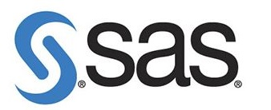
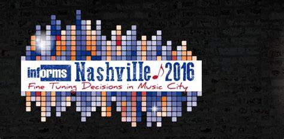

Hi there, I'm Afshin Oroojlooy!
I am RL research scientist at SAS Institute. I recently defended my PhD dissertation and graduated from Industrial Engineering department at Lehigh University. I had the pleasure to work under supervision of professor Larry Snyder and professor Martin Takac. The goal of my dissertation was to extend machine learning algorithms to solve combinatorial optimization problems in supply chain problems. I got my M.S. of Industrial Engineering from Sharif University of Technology and B.S of Industrial Engineering from Isfahan University of Technology
.My current research is focused on extension of Reinforcement Learning algorithms for real world problems, e.g. inventory optimization on multi-echelon networks, traveling salesman problem, stochastic vendor route problem, customer journey optimization, Traffic singla control, HVAC, etc. You can see details of them in my publications or read some overview on my Blog...
Please find my resume Here (updated at 07/13/2020). I also served as system administrator in COR@L Lab during the last two years of my PhD career.
You can find my blog posts here!
Updates:
| 04/02/2021 | I am presenting " An Introduction to RL and its Applications in Supply Chain Management" at a side workshop at IIISE online conference!. |  |
|---|---|---|
| 11/08/2020 | I am attending INFORMS Annual Meeting 2020 conference, Online!. I am presenting our new work on traffic signal processing and a review on one section of our MARL review papers, and co-presenting our another presentation on MARL review. | |
| 09/27/2020 | Our work on application of RL for a traffic signal control accepted on NeurIPS 2020, Vancouver, CA. See the paper [here] | |
| 06/25/2020 | The beer game paper is accepted on Manufacturing and Service Operations Management (MSOM). Read more about it at blog . We also released the code of paper at github | |
| 08/11/2019 | Our review paper on multi-agent cooperative RL is out !. | |
| 06/12/2019 | I am attending ICML 2019 conference and workshop!. | |
| 06/04/2019 | The newsvendor paper is accepted on Institute of Industrial and Systems Engineers (IISE) Transaction. Read more about it at blog . We also released the code of paper at github. | |
| 11/04/2018 | I am attending INFORMS Annual Meeting 2018 conference at Phoenix, AZ!. I am presenting our Beer-Game paper, and co-presenting our VRP paper. |  |
| 09/16/2018 | I Started my full time position as a RL research Scientist at SAS Institute . |  |
| 09/13/2018 | I successfully defended! my dissertation at the ISE Department of the Lehigh University. | |
| 09/04/2018 | Our RL for VRP paper is accepted at NeurIPS 2018 .! See the code [here] | |
| 03/09/2018 | Opex Analytics released an online free version of beer game which uses our AI engine. Try it to see if you can beat the AI! | |
| 08/10/2018 | I am attending Modeling and Optimization: Theory and Applications (MOPTA) 2018 conference at Bethlehem, PA!. I am presenting our RL for beer game paper and I am co-presenting our RL for VRP paper. | |
| 10/22/2017 | I am attending INFORMS Annual Meeting 2017 conference at Houston, AZ!. I am presenting some initial results on our Beer-Game paper. |  |
| 08/16/2017 | I am attending Modeling and Optimization: Theory and Applications (MOPTA) 2017 conference at Bethlehem, PA!. I am presenting our Newsvendor paper and multi-echelon stockout prediction. | |
| 06/01/2017 | I Started my internship at RL team at SAS Institute . | |
| 11/13/2016 | I am attending INFORMS Annual Meeting 2016 conference at Nashville, TN!. I am presenting our Newsvendor paper. |  |
| 08/04/2015 | Our paper, "Optimal scheduling of networked energy storages" accepted at IEEE Global Conference on Signal and Information Processing (GlobalSIP) conference at Orlando, FL!. |